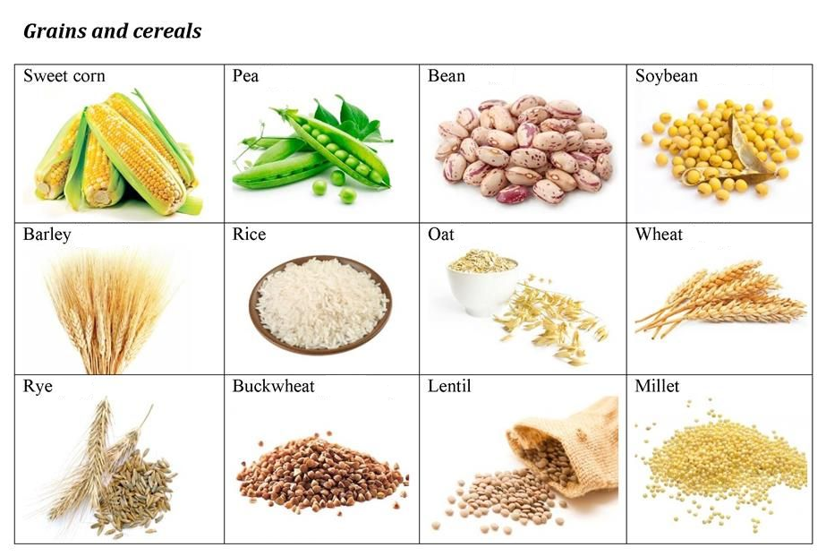
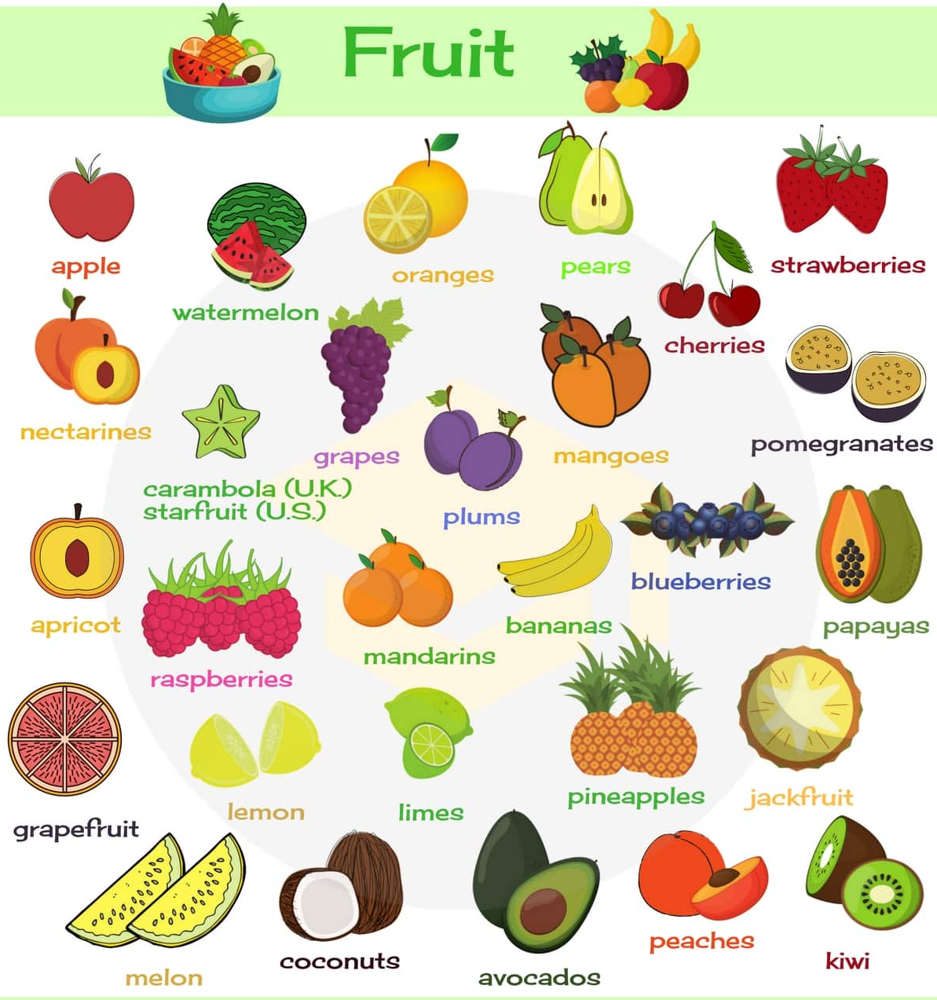
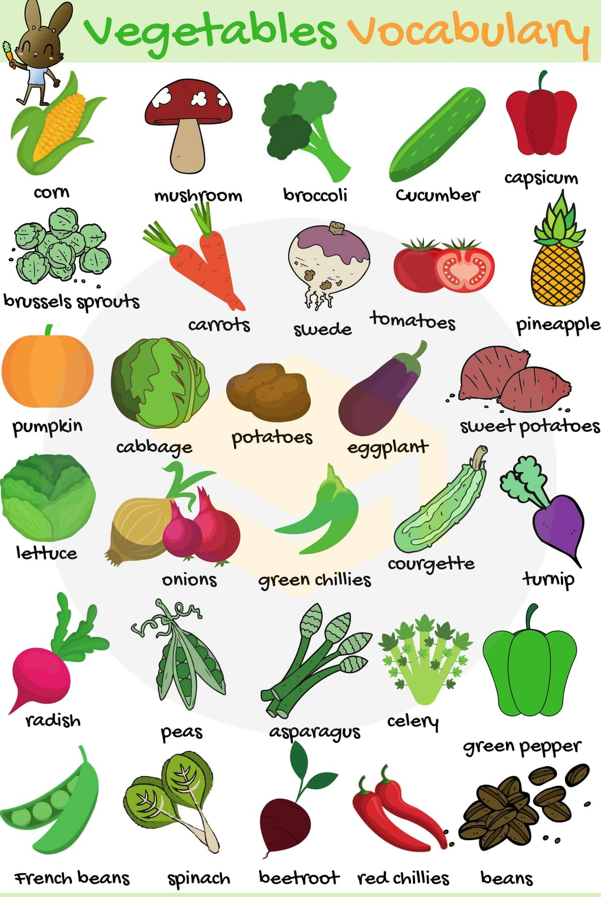
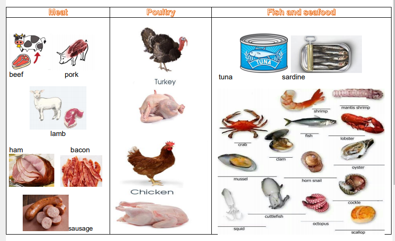
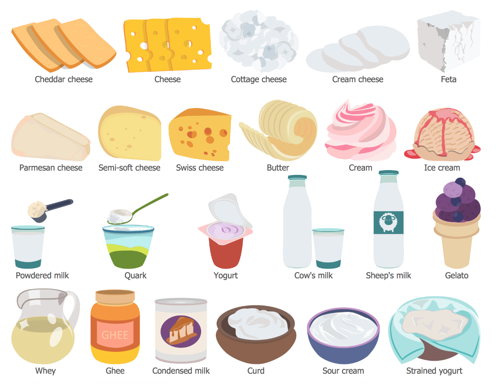
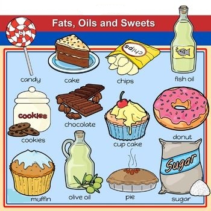

Food Groups
- Read the information about the food groups. Pay attention to the new vocabulary observing the image, if there is a word you do not understand click on dictionary.
- Make a list of the unknown words in your portfolio so you can learn them.
A food group is a collection of foods that share similar nutritional properties or biological classifications. Nutrition guides typically divide foods into food groups and recommend daily servings of each group for a healthy diet. There are five food groups:
- grains and cereals
- vegetables and fruits
- meats
- milk and alternatives
- fats and sugar
1. Grains and cereals group
The grains and cereals group is the first group. You probably eat the most of this group during the day. These foods give us enegy to work, to learn, to do any activity in general. This group includes beans. Grains sometimes include potatoes and other starches, pasta and breads, it is often the largest category in nutrition guides.

2. Fruits and vegetables group
The fruit and vegetables group is the second group, sometimes people separate it into two groups but fruits and vegetables are very similar. You should eat a lot of these every day. Fruits are carbohydrates like sugar, dairy, grains, and starches.


3. Meats group
The next group is the group of meat. It is sometimes known as the protein group, this group provides minerals and more protein to help you grow. It does not only include meat but animal products as well; such as eggs.

4. Dairy group
The milk and alternatives group is known as the dairy group. It is made up of milk and its derivatives. These have lots of calcium and protein, they make your muscles and bones strong.

5. Fats and sugar group
The final group is the fats and sugar group. It is typically a very small category in nutrition guides. Examples include candy, soft drinks, and chocolate. Fast food is also included in this group.
